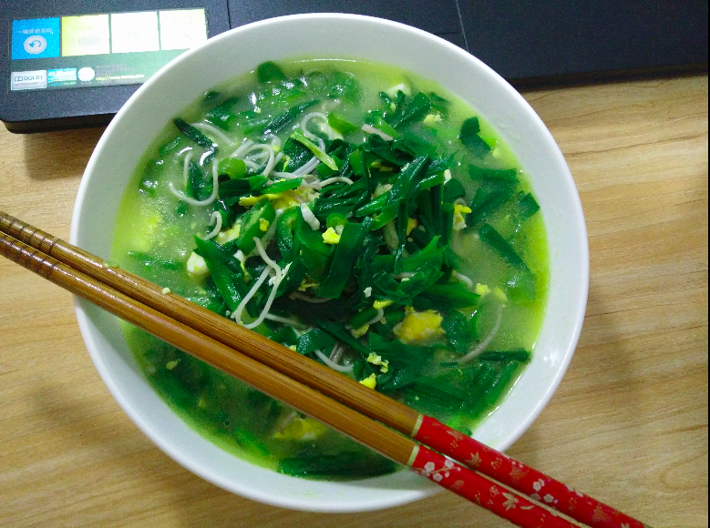
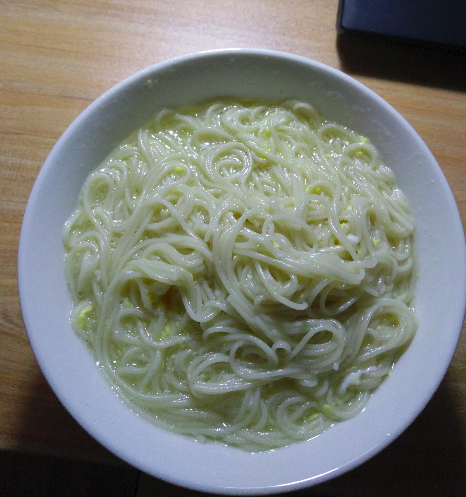

很多时候下班回家，不想做饭，哎，煮点面吃把。于是乎，天天吃面条。
尝试了一些做面条的方法(其实是不会煮瞎搞)
瘦肉虾仁青菜面：
首先倒油把瘦肉炒一下，不过不要炒熟吵老掉了，稍微炒一下就行。
瘦肉在后面和面条一起慢慢煮，这样瘦肉的鲜味和面条的味道才能很好的融合
再把瘦肉捞起来放在碗里，然后在锅里加油加水，待烧开时放入面条。
面条煮一会儿就把洗好的虾放入，青菜的话不需要切，只需用手把整棵撕小一点就行。然后倒入刚才煮的瘦肉一起煮，大概几分钟就差不多了，然后加点味精和盐，再搅拌均匀。然后美味的面条就可以出锅了。
下次补图
蔬菜鸡蛋面：
蔬菜我一般选韭菜和带辣味的青椒(够辣才够味)。
最开始先煎一下鸡蛋，如果喜欢川味可以加点花椒，要把花椒在油中煎一会儿。
一个四川同学教我的，不过到现在我也没学会，一点也没有把花椒的麻味煮出来。
差不多就加入切碎的青椒，这时可以感受到呛鼻的辣椒味。也是稍微炒一下就加入水，不过别捞起来，这样汤才更带辣味。
然后水开加面条，煮一会儿加切好的韭菜，再煮一下加点调味的就可以出锅了。
一般在回家时比较晚煮饭还要等饭熟或者是不想动手炒菜时都会选择这种做法。既有蔬菜，又有细粮，多吃几次也不会感觉腻。
这几天煮的时候加了很多蔬菜，然后就看不到面条了哈哈哈，，

什么都不加的面条:
就是什么都不加的面条，当然除了味精盐之类的。
这种面条多吃几次基本想吐的那种，一点味道没有，比白开水还白开水，，
为什么什么都不加呢，因为家里的食材全部被我吃光了，还来的及去补，然后真的就只剩下面条可以吃了，，

这张图中还是加了鸡蛋的，脑补这张图连鸡蛋都没有的画面。
#####结语：
面条是食物，煮面条吃是为了填饱肚子，让自己吃的开心。
所以，不管面条怎么煮，一句话，怎么开心怎么来，哈哈。